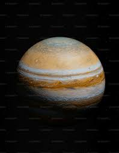
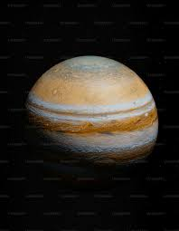

Mercury
Mercury is the closest planet to the Sun and the smallest in the Solar System. It has a very thin atmosphere.
Mercury is the closest planet to the Sun and the smallest in the Solar System. It has a very thin atmosphere.


 
